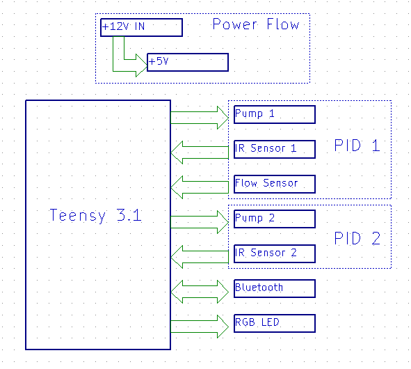
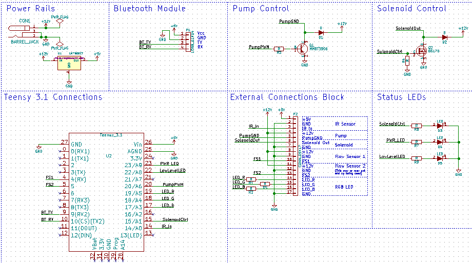
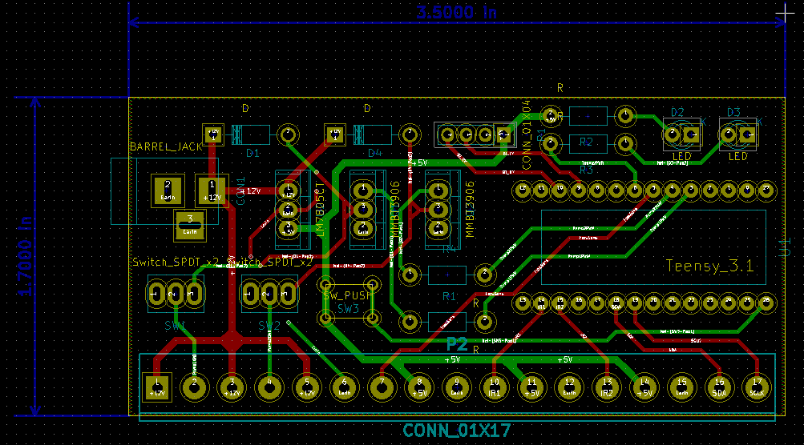
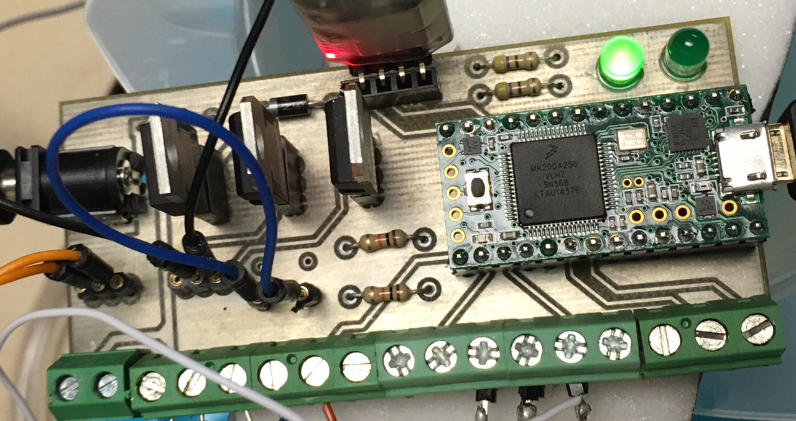
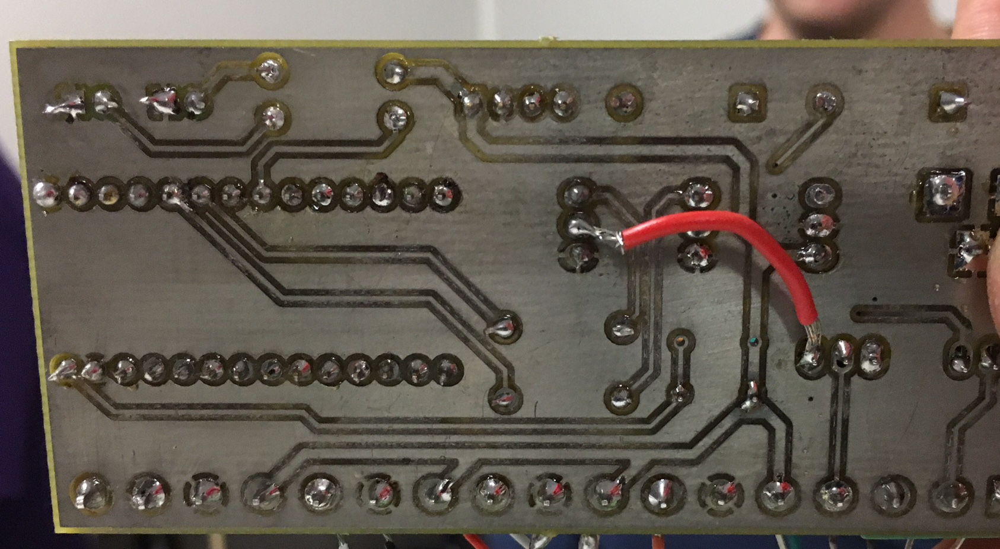
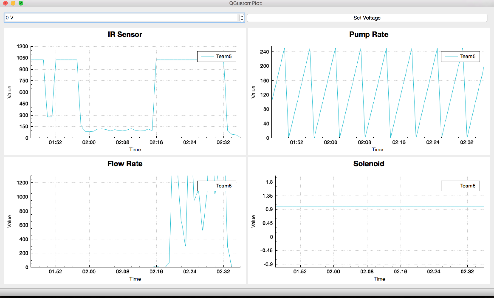
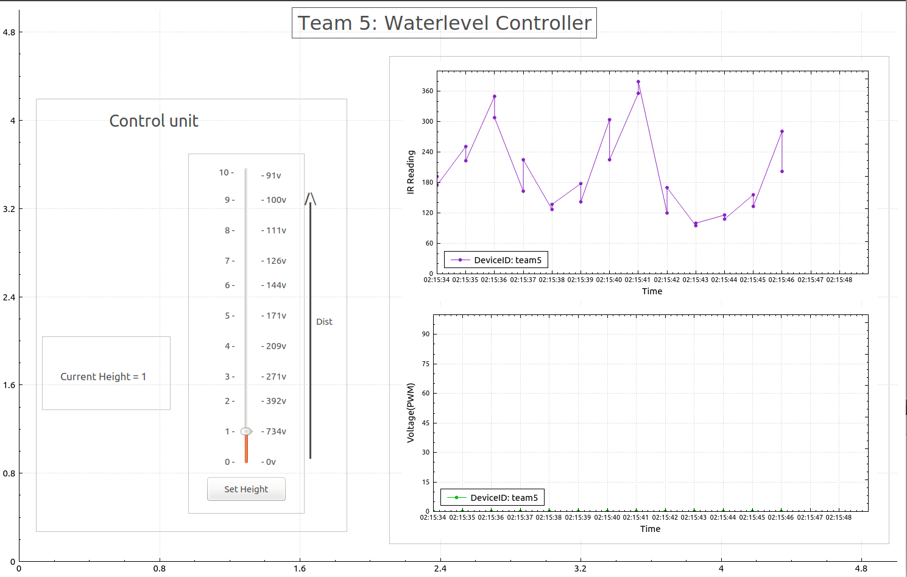
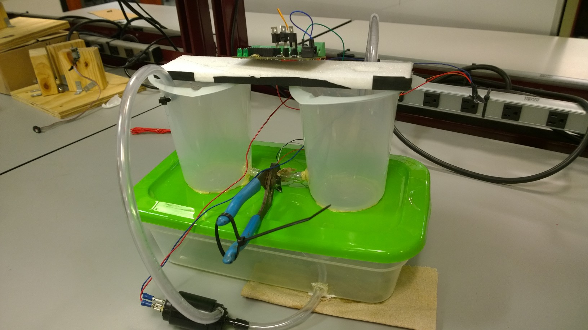

Water Management System
Overview
The goal is to create an iterative cycle where the state of a water reservoir is acquired through various sensors; this information can subsequently be employed for the purpose of decision and control; and an action (or a set of actions) is then applied to the water level in the reservoir through actuation. These actions alter the state of the physical entities, guiding the system towards a desired goal. This feedback loop continues in psuedo real-time as the embedded system strives to optimally manage available resources.Primarily the microcontrollers interact with four major components: an infrared (IR) distance sensor, a pump, a flow sensor, and a valve. In addition, data will have to be transferred psuedo real-time from the microcontroller to a Linux box using a serial connection and Bluetooth. The Qt interface visualizes the sensor data and also stores it in a SQLite database. The feedback controls the water level using a PID controller.
System Setup
The purpose of the project is to build a water management system for monitoring and controlling the water level in a reservoir remotely. This water management system consists of a working replica of water reservoir system, a PCB that integrates various sensors and communication modules to a teensy development board and a Qt interface for visualizing and setting the state of physical entities like the water level and pump rate in psuedo real-time. Building this system involves the following tasks:- A PCB design for integrating IR sensor, Pump, Flow rate sensor and bluetooth commiunication module to a teensy development board.
- A PID control in teensy for managing a consistent water level.
- Networking and Qt interface for visualizing and setting the water level and pump rate on the remote Linux box.
PCB design
The following block diagram of the PCB was designed in KiCad

Fig.1 - The blockdiagram shows the requirements of the project.
There are three steps to design a PCB board:
- Eeschema design
- Footprint edit
- Layout design
-
Eeschema design
The schematic was organized graphically into modular components using net names with local labels to easily see the function of each component, and how it connects to the Teensy. It was designed to have enough connections added for up to two flow rate sensors and two pumps. Two status LEDs were added to the board to indicate power good and a low water level warning. The power good LED turns on from a digital write on the Teensy, which means that the whole power chain is functioning correctly. The LED gets 3.3V from a Teensy DIO, indicating that its internal regulator is functioning because the Teensy is being powered from the 5V regulator, and the regulator takes its input from the 12V power in.
Fig.2 - The Eeschema design shows the schematic of the of the PCB components connections.
-
Footprint edit
The Teensy and screw terminal blocks were both found in public libraries online here and here respectively. All other devices and footprints were found in the default libraries. -
Layout design
Layout was done with an attempt to minimize board space. The 17 port screw terminal block was by far the longest component, making the board naturally oriented along it. The power traces were 40 mils, and all other traces were 20 mils, everything has a 20 mil clearance. The board was also laid out with an attempt to minimize the length of the +12V and +5V power traces, but the +5V trace stretched the length of the board to accomodate the Teensy and Bluetooth module. The status LEDs were set far from other components on one side of the board to make them easy to locate. 3 mounting holes were placed in order to accomadate standoffs from the 3D printed reservoir cap. A ground pour was made on both layers with proper thermal relief from pads for soldering.
Fig.3 - The layout of the PCB.
Gerber and drill files were generated and sent to the Engineering Innovation Center(TAMU) for fabrication. Once fabricated, the components were soldered on, and the board was plugged in and tested for functionality.
Fig.4 - The topview of the PCB with soldered components.
Fig.5 - The bottomview of the PCB with soldered components.
PID controller
Project consists of programming the controls for managing desired water levels. PID library was used to program the Teensy board through Arduino IDE.

Fig.6 - The blockdiagram of a PID controller.
A PID controller calculates an 'error' value as the difference between a measured Input [IR sensor reading] and a desired setpoint [desired water level]. The controller attempts to minimize the error by adjusting an Output [PWM voltage to pump]. This adjusting of the output to drive the input towards a setpoint is achieved by 3 tuning parameters. They are:
- Proportionate gain - Kp
- Integral gain - Ki
- Differential gain - Kd
- Kp = 20
- Ki = 4
- Kd = 2
Interfaces and Networking
- Programming IDE: Qt (NUC software) and Arduino IDE (Teensy)
- Bluetooth Module: HC-06
- Bluetooth connection protocol between HC-06 and NUC: RFCOMM
- Client-Server communication among NUCs: TCP/IP
Client
The Bluetooth module (HC-06) is configured as a serial i/o device with the Teensy. Any communication between Teensy and HC-06 is just a Serial. Read/Write. The Teensy is programmed to listen to "get_data" from the bluetooth receive. Once this string is detected, the current IRRange, PumpRate, FlowRate and SolenoidState data are sent serially to HC-06, which in-turn, transmits it. The NUC runs a Qt program that connects to HC-06 reads the data and plots the values in one thread and another thread connects to a central server and sends these values in JSON format.{ "ID":"TeamName", "IRRange":"xxx", "PumpRate":"xxx", "FlowRate":"xxx", "Timestamp":"Unix epoch", "CurrentIP":"xx.xxx.xxx.xx" }
"get_data" command is sent via Bluetooth to HC-06 and the application listens for IRRange, PumpRate, FlowRate data (in that order). This data is parsed and stored locally in JSON format. Timestamp of this message is recorded and is added to the JSON file.
We read the locally created JSON file and upon server request, sends these values as a JSON file to the requesting server.
Server
The Server is responsible for the multiple client integration. Each Client connects to the server individually and establishes a secure TCP connection.Once the handshaking is complete with each client, the Server polls each NUC-Client in time-based slots. The Clients accordingly communicate their current parameters (IRRange, PumpRate and FlowRate).
The current values of the parameters are updated in the database as well as periodically plotted vs time using qCustomPlot. The NUC server and client can be found here .
Data visualization
The Visualization of this project is observed on the central client using a QCustomPlot GUI. The four sensor data received from the NUC servers are plotted in four different plots, with a unique graph for each team. All the data is plotted against the time. The central client can control the pump speed from the GUI by sending the voltage value to the corresponding NUC server.

Fig.7 QCustomPlot of sensor data are plotted against time.

Fig.8 A simple waterlevel controller with minimal plotting and enhanced control interface.
Project Setup
